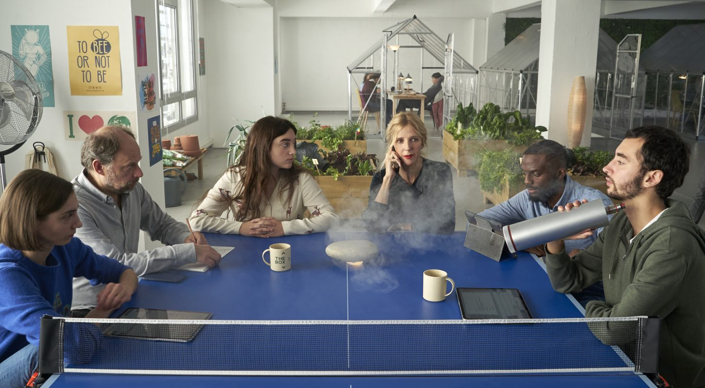

La vie dans une entreprise

Extrait du film Les 2 Alfred
On regarde une scène du film Les 2 Alfred (2020) d’abord avec le son coupé.
Début 9:45 — Fin 15:32
On regarde une scène du film Les 2 Alfred (2020) avec le son.
Vocabulaire utile
- partir en sucettes
-
expression famillière qui illustre une tournure des événements vers le négatif, l’absurde, ou le comique
- dispo H24
-
abréviation pour disponible 24 heures sur 24
- plaît-il?
-
expression de politesse vieillie qui signifie: “Comments?”, “Pardon, pourriez-vous répétez s’il vous plaît?”
- la fatuité
-
l’orgueil, l’arrogance
- la plus-value
-
profit, augmentation de valeur avec le temps
- marrant
-
drôle
- Martine Aubry
-
femme politique française
- môme
-
enfant en langage familier
- on se brûle
-
expression familière qui veut dire on prend des risques, on travail très dur
- on se bouffe le cul
-
détournement vulgaire de la phrase “se bouffer le nez” qui veut dire se disputer.
- mission
-
tâche fixée avec des objectifs spécifiques qui doit être accomplie par un.e employé., ou un groupe d’employé.e.s
- tu me dropes ton “06”? (anglicisme, familier)
-
anglicisme tu me donne ton numéro de téléphone portable? (les numéros portables en français commencent par 06)
- faire sa petite commission
-
uriner
- rém (langage familier)
-
abréviation de rémunération, salaire
Le jargon des entreprises
Écoutons l’émission Façon de parler: Le jargon des entreprises
Transcription
Intro
Façon de parler, façon de parler, façon de parler (rires)
Caroline
Oui du coup Emilie, est ce que tu as pu revoir les slides…
Émilie
Je les ai mis du coup dans le [inaudible] screenshot de l’app. Je t’ai mis le le dernier update de la version que j’ai eu des dev…
Caroline
Ah oui je vois ça, oui.
Émilie
On parle de flex office aussi beaucoup maintenant.
Caroline
Je fais le reparting de ma journée de ma semaine. COMEX mais on parle aussi de CODIR de com up de stand up meeting meeting, lorsqu’il y a un crash program peut-être…
Journaliste
Que vous soyez au bureau ou en télétravail, vous n’y échapperez pas. Dans les entreprises, à la rentrée, on fait le point1 et on enchaîne les réunions pour parler des projets à venir.
1 évaluer la situation, faire le bilan
La preuve avec Caroline et Emilie qui travaillent toutes les deux dans la télécommunication. Aujourd’hui elles sont en work at home et elles m’ont permis d’assister à leur réunion teams du matin.
Émilie
Salut Caro, tu m’appelles pour qu’on revoie ta prés’? Oui c’est pour la prés’ devant le COMEX lundi.
Journaliste
Alors la prés’, le COMEX… Les filles je vous arrête. Qu’est-ce que c’est la prés’?
Caroline
La prés’ c’est une présentation tout simplement.
Journaliste
Et le COMEX donc?
Caroline
Alors, le comex c’est un peu plus compliqué. C’est le comité exécutif. C’est les représentants de la direction devant qui on va présenter notre projet.
On parle de COMEX, mais on parle aussi de CODIR, de COMOP, de COPIL. Ce sont des mots qui sont assez employés dans les entreprises, qui sont des raccourcis pour comité de direction, comité exécutif, comité opérationnel, comité de pilotage.
Ce sont soit des réunions très opérationnelles avec les équipes, soit des réunions avec des représentants à plus ou moins haut niveau.
Journaliste
Et vous fonctionnez beaucoup comme ça, avec des abréviations.
Caroline
Oui, que ça soit des expressions spécifiques à l’entreprise, très internes, ou du monde du travail en général.
Journaliste
Donc là toutes les deux aujourd’hui, vous n’êtes pas sur le site de votre entreprise. Comment on dit Caroline?
Caroline
Alors, moi je parle de work to home. Donc, c’est du télétravail, travail à la maison.
Émily
Moi je dis plutôt remote. Je pense que les deux se valent. Mais en remote, je suis à distance, quoi.
Journaliste
Il y en a beaucoup d’autres des mots comme ça en anglais. Est-ce que c’est important quand on travaille dans une entreprise de bien parler anglais pour comprendre tous ces termes techniques?
Caroline
Alors, c’est l’anglais vraiment technique donc c’est assez simple. Ce n’est pas l’anglais qu’on utilise en voyage ou tous les jours. C’est des mots qui sont rentrés quelque part dans le langage courant.
Émily
On va parler de To-do list, mais je pense qu’il y en a beaucoup qui en parlent en dehors du monde du travail. Mais on a notre To-do pour la journée. On verra ça au Daily de demain.
Journaliste
Qu’est-ce que c’est le daily?
Émily
Le daily,c’est un daily meeting. En fait, c’est une réunion quotidienne. Daily, ça veut dire quotidien en anglais. Il y a beaucoup d’équipes qui fonctionnent avec des réunions matinales qui vont décrire l’organisation de la journée.
Journaliste
C’est comme la conférence de rédaction dans la presse par exemple.
Caroline
Ah ça je ne connais pas par contre. Mais nous, on parle aussi de stand-up meeting…
Émily
Parce qu’on est debout parce que c’est une réunion qui doit être très rapide, pas plus que quinze minutes. On est en stand up, on ne va pas se poser, on n’aura pas les PC, C’est censé2 être très efficace.
2 supposé
Caroline
On parle aussi de travailler en one roof, tous sous le même toit. C’est un endroit dans l’entreprise qui est réservé à ce projet.
Émily
On parle de flex office aussi. Maintenant, office comme bureau et flex parce qu’on n’a pas un bureau attitré3 comme avant, on va se placer en fait un bureau libre, c’est flexible. Si nous avons une task force ensemble par exemple…
3 qui nous est designé
Journalistse
Ou là, ça y est. Vous m’avez perdue là. Une task force… Qu’est ce que c’est qu’une task force Émilie?
Émilie
Un projet très urgent, difficile. Et donc on a besoin vraiment d’être ensemble plusieurs jours d’affilée4. On va être en task force. En gros, on se rassemble tous dans les mêmes locaux. Et pour vraiment que ce soit fluide, qu’on ne perde pas de temps.
4 successifs
Caroline
On parle aussi de war room.
Journaliste
War room donc, pièce de guerre. Décidément, on s’enfonce dans la crise…
Émily
War room pour la task force. On est en mode combat, en gros, pour essayer de trouver la bonne solution, la bonne décision, les bonnes méthodes et travailler ensemble. Donc War Room, ça va être écrit sur la porte et personne n’y va. Et c’est dédié à résoudre un problème un peu critique.
Journaliste
Bon ben, Caroline et Emilie, je vous laisse continuer votre prés’.
Caroline
Oui, du coup coup, Émilie est-ce que tu as pu revoir les slides?
Émilie
Alors moi, j’avais juste des petites remarques. Mais je t’ai mis, du coup, de screenshots de l’app pour que tu puisses peut-être les remplacer parce qu’ils n’étaient pas tout à fait à jour. Je t’ai mis le dernier update de la version que j’ai eu des devs.
Caroline
Ah oui, je vois ça. Ouais.
Journaliste
Alors Caroline, ça fait beaucoup de termes techniques: les apps, les screenshots, les updates… est-ce que tu peux m’en dire un peu plus.
Caroline
L’idée, c’est que Émilie m’a envoyé des captures d’écran de la dernière version de l’application pour qu’on puisse présenter l’avancement du dev, des développements.
Journaliste
Et ça c’est quelque chose que vous allez voir toutes les deux en remote, en télétravail quoi.
Caroline
Exactement. Ou peut-être en physique, non? Tu passes la semaine prochaine?
Émilie
Oui, typiquement mercredi ou jeudi c’est bien pour moi.
Caroline
Eh ben, rendez-vous dans le one roof mercredi, alors, bye bye.
Journaliste
En anglais toujours!